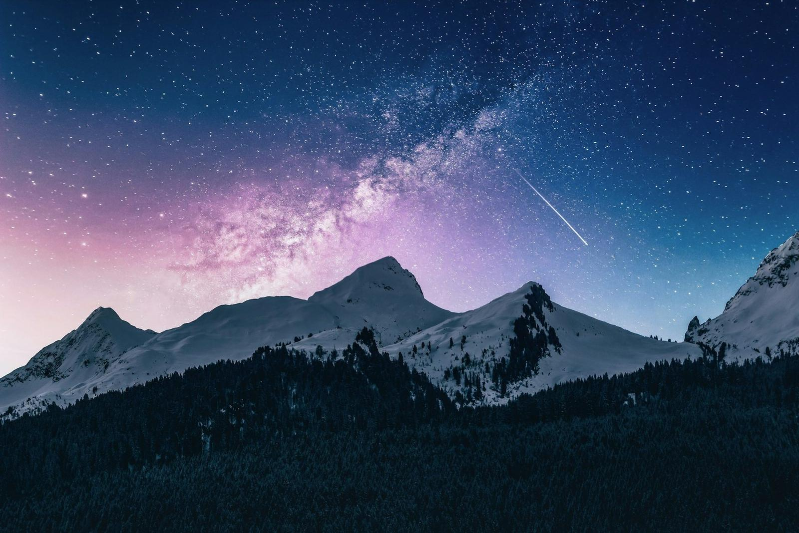

在雷克雅未克机场取到车钥匙时是上午十点，外面的风大得像有人一直在推你的后背。我沿着一号公路往南开，第一次停车是一小时后——风大到必须两只手才能把车门推开，我一手抓着门框，一手把围巾往脸上拉，站在路边笑了很久。冰岛的第一课不是风景，是天气：它不讲道理，也不接受协商。
第三天我去了那座苔藓峡谷。车停在空地，走了十几分钟，脚下的碎石和苔藓软得像地毯。站在崖边往下看，冰川河在谷底拐了一个弯，白色的水线切开深绿的岩壁，远处有一个小小的人影站在对面的崖上——那个点小得几乎要被风吹走。我在那里站着看了很久，意识到在这类风景里，人不该是主角，能站在这里看一眼已经算是被允许的运气。

冰河湖那天是多云。浮冰从冰川末端脱落，缓缓漂向入海口，蓝白相间，有的翻了个面，露出更深处那种近乎透明的青色。我在岸边坐下吃了一个已经冷掉的三明治，浪打在冰块上的声音很钝。有一只海豹在远处探出头又沉下去，我举起相机的时候它已经不见了——后来我把这张没有海豹的照片留在画廊里，因为记得比拍到更重要。
环岛第七天夜里十一点半，营地的云忽然散开。绿色的带子从山脊后面升起来，先是淡淡的一条，然后开始流动、折叠、消失、重生。整个营地安静下来，安静到能听见旁边帐篷里人的呼吸。我没有拍出什么好照片——手冻得按不住快门——但我记得那条光在天上铺开的样子，记得自己张开手掌，发现手指在抖，并不是因为冷。
最后一天开回机场，暖气开到最大，车窗外的荒原像一张没有写完的地图。我没有说话，同行的人也没有。冰岛没有让我得到什么答案，它只是把尺度重新调了一遍：把"等待"从浪费变成了必要，把"计划"从控制变成了建议。